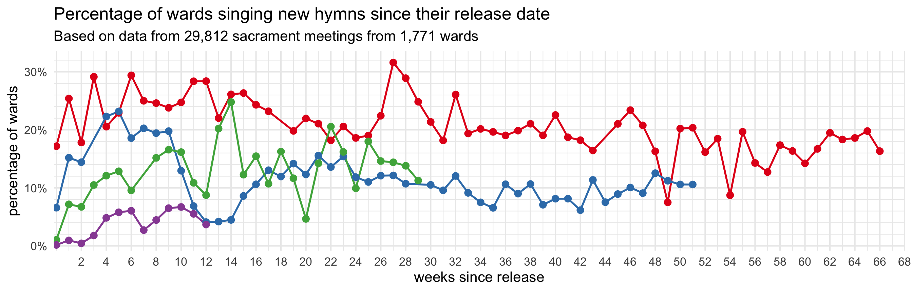

| Number of wards I have data from, by week | |
|---|---|
| Since June 15th, 2025 | |
| date | wards |
| June 15 | 606 |
| June 22 | 528 |
| June 29 | 454 |
| July 06 | 730 |
| July 13 | 765 |
| July 20 | 690 |
| July 27 | 660 |
| August 03 | 735 |
| August 10 | 538 |
| August 17 | 430 |
| August 24 | 596 |
| August 31 | 648 |
The Fourth Batch of New Hymns!
general
frequency
new hymns
On June 12th, 2025, the church released the fourth batch of new hymns. In previous posts, I have covered in detail the first, second, and third batches of hymns and how they were incorporated into sacrament meetings. This page covers period since when the fourth batch came out and will update weekly as more data comes in.
Currently I have data from 7,380 sacrament meetings from 1,079 wards since June 15, 2025. Here’s how much data I have for each week so far, just so you have an idea of what I’m working with.
How many wards sang new hymns each week?
The following plot show what percentage of wards sang from each of the new batches of hymns, per week, since June 2024 when the new hymns started getting rolled out. I’ve included data from all batches just so you can compare them to each other.

Since the fourth batch was released, we’ve seen a very slow rise in popularity. August 17th was the best so far with 6.5% of wards singing from it. All four batches have been pretty consistent for the past month or so, with the first batch most common, then the second, then the third, then the fourth. We are now to the point though where just about half of wards are singing at least one new hymn in a given week.
Here’s another version of the same plot but instead of the actual dates, it’s in terms of how many weeks since the batches came out. This version of the plot is useful to spot any parallel trends across the batches, especially in the first few weeks of their release.

Here we can see that each batch is a little less popular than the previous one, both overall and week by week. Nearly 20% of wards sang from the first batch the week it came out. About 8% did for the second batch. About 1% for the third batch. And of the 576 wards I have data from on June 15th, just one of them sang from the fourth batch. Granted, it was Father’s Day, but after almost two months, still only a few wards have sung from this batch. For the fourth batch, it has never been as popular as any of the others.
What hymns are most popular?
The following table shows the hymns from the fourth batch in order of how popular they are. On the right, I have an approximation of how many wards have sung that hymn during this period. I’ve seen all but
| Approximate percentage of wards new hymns have been sung in | |
|---|---|
| Since June 15, 2025 | |
| Hymn | percent of wards |
| O Lord, Who Gave Thy Life for Me (1041) | 7.1% |
| Oh, How Great Is Our Joy (1033) | 6.7% |
| Look unto Christ (1032) | 6.2% |
| I'm a Pioneer Too (1034) | 6.1% |
| I'm Gonna Live So God Can Use Me (1037) | 5.1% |
| Because (1039) | 3.9% |
| As I Keep the Sabbath Day (1035) | 3.1% |
| His Voice as the Sound (1040) | 2.7% |
| The Lord's My Shepherd (1038) | 2.6% |
| Read the Book of Mormon and Pray (1036) | 1.2% |
| Still, Still, Still (1207) | 0% |
It’s perhaps not too surprising that the most popular one is
What hymns are most popular each week?
It’s been long enough that we can get an idea of which hymns were popular when. The following plot shows the percentage of wards that sang each hymn of the wards that sang any fourth batch hymns.
The most obvious trend is that
When during meetings are these hymns sung?
We can also see when during sacrament meetings these hymns have been sung. Data sparsity makes this a pretty unreliable table though. We’ll have to wait a few more weeks or months to really see some more meaningful trends.
| When were new hymns sung in sacrament meeting? | ||||
|---|---|---|---|---|
| Since June 15, 2025 | ||||
| New Hymn | Opening | Sacrament | Intermediate | Closing |
| Look unto Christ (1032) |
27%
|
2%
|
46%
|
24%
|
| Oh, How Great Is Our Joy (1033) |
40%
|
0%
|
40%
|
21%
|
| I'm a Pioneer Too (1034) |
24%
|
0%
|
57%
|
19%
|
| As I Keep the Sabbath Day (1035) |
45%
|
5%
|
15%
|
35%
|
| Read the Book of Mormon and Pray (1036) |
29%
|
0%
|
71%
|
0%
|
| I'm Gonna Live So God Can Use Me (1037) |
24%
|
0%
|
38%
|
38%
|
| The Lord's My Shepherd (1038) |
28%
|
0%
|
11%
|
61%
|
| Because (1039) |
23%
|
0%
|
46%
|
31%
|
| His Voice as the Sound (1040) |
25%
|
0%
|
50%
|
25%
|
| O Lord, Who Gave Thy Life for Me (1041) |
13%
|
69%
|
9%
|
9%
|
| Note: Each row adds up to 100%. | ||||
Conclusion
That’s it for now. So far, it seems like this batch has been less popular. A part of it might be just sheer numbers: it’s smaller than the third batch but still bigger than the second batch. We’ve also had some holidays here and there, like Father’s Day, 4th of July, and Pioneer Day, so those likely take precedent. It may also just be that the novelty of new hymns has worn off, although it’s important to note that almost half of wards are singing at least one new hymn each week. So maybe it’s that we’re still getting used to the hymns in the first batches before moving on to this latest one. Anyway, we’ll see what happens next week!